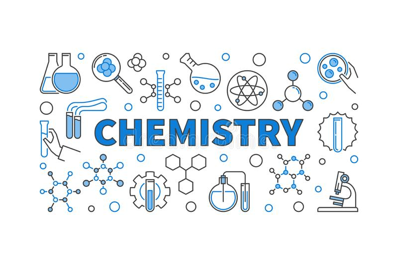

Chemistry

Back To Main
All information is from Britannica
Look there for more infromation
- Introduction
- Analytical Chemistry
- Biochemistry
Introduction
chemistry, the science that deals with the properties, composition, and structure of substances (defined as elements and compounds), the transformations they undergo, and the energy that is released or absorbed during these processes. Every substance, whether naturally occurring or artificially produced, consists of one or more of the hundred-odd species of atoms that have been identified as elements. Although these atoms, in turn, are composed of more elementary particles, they are the basic building blocks of chemical substances; there is no quantity of oxygen, mercury, or gold, for example, smaller than an atom of that substance. Chemistry, therefore, is concerned not with the subatomic domain but with the properties of atoms and the laws governing their combinations and how the knowledge of these properties can be used to achieve specific purposes.
The great challenge in chemistry is the development of a coherent explanation of the complex behaviour of materials, why they appear as they do, what gives them their enduring properties, and how interactions among different substances can bring about the formation of new substances and the destruction of old ones. From the earliest attempts to understand the material world in rational terms, chemists have struggled to develop theories of matter that satisfactorily explain both permanence and change. The ordered assembly of indestructible atoms into small and large molecules, or extended networks of intermingled atoms, is generally accepted as the basis of permanence, while the reorganization of atoms or molecules into different arrangements lies behind theories of change. Thus chemistry involves the study of the atomic composition and structural architecture of substances, as well as the varied interactions among substances that can lead to sudden, often violent reactions.
Chemistry also is concerned with the utilization of natural substances and the creation of artificial ones. Cooking, fermentation, glass making, and metallurgy are all chemical processes that date from the beginnings of civilization. Today, vinyl, Teflon, liquid crystals, semiconductors, and superconductors represent the fruits of chemical technology. The 20th century saw dramatic advances in the comprehension of the marvelous and complex chemistry of living organisms, and a molecular interpretation of health and disease holds great promise. Modern chemistry, aided by increasingly sophisticated instruments, studies materials as small as single atoms and as large and complex as DNA (deoxyribonucleic acid), which contains millions of atoms. New substances can even be designed to bear desired characteristics and then synthesized. The rate at which chemical knowledge continues to accumulate is remarkable. Over time more than 8,000,000 different chemical substances, both natural and artificial, have been characterized and produced. The number was less than 500,000 as recently as 1965.
Intimately interconnected with the intellectual challenges of chemistry are those associated with industry. In the mid-19th century the German chemist Justus von Liebig commented that the wealth of a nation could be gauged by the amount of sulfuric acid it produced. This acid, essential to many manufacturing processes, remains today the leading chemical product of industrialized countries. As Liebig recognized, a country that produces large amounts of sulfuric acid is one with a strong chemical industry and a strong economy as a whole. The production, distribution, and utilization of a wide range of chemical products is common to all highly developed nations. In fact, one can say that the “iron age” of civilization is being replaced by a “polymer age,” for in some countries the total volume of polymers now produced exceeds that of iron.
Analytical Chemistry
Most of the materials that occur on Earth, such as wood, coal, minerals, or air, are mixtures of many different and distinct chemical substances. Each pure chemical substance (e.g., oxygen, iron, or water) has a characteristic set of properties that gives it its chemical identity. Iron, for example, is a common silver-white metal that melts at 1,535° C, is very malleable, and readily combines with oxygen to form the common substances hematite and magnetite. The detection of iron in a mixture of metals, or in a compound such as magnetite, is a branch of analytical chemistry called qualitative analysis. Measurement of the actual amount of a certain substance in a compound or mixture is termed quantitative analysis. Quantitative analytic measurement has determined, for instance, that iron makes up 72.3 percent, by mass, of magnetite, the mineral commonly seen as black sand along beaches and stream banks. Over the years, chemists have discovered chemical reactions that indicate the presence of such elemental substances by the production of easily visible and identifiable products. Iron can be detected by chemical means if it is present in a sample to an amount of 1 part per million or greater. Some very simple qualitative tests reveal the presence of specific chemical elements in even smaller amounts. The yellow colour imparted to a flame by sodium is visible if the sample being ignited has as little as one-billionth of a gram of sodium. Such analytic tests have allowed chemists to identify the types and amounts of impurities in various substances and to determine the properties of very pure materials. Substances used in common laboratory experiments generally have impurity levels of less than 0.1 percent. For special applications, one can purchase chemicals that have impurities totaling less than 0.001 percent. The identification of pure substances and the analysis of chemical mixtures enable all other chemical disciplines to flourish.
The importance of analytical chemistry has never been greater than it is today. The demand in modern societies for a variety of safe foods, affordable consumer goods, abundant energy, and labour-saving technologies places a great burden on the environment. All chemical manufacturing produces waste products in addition to the desired substances, and waste disposal has not always been carried out carefully. Disruption of the environment has occurred since the dawn of civilization, and pollution problems have increased with the growth of global population. The techniques of analytical chemistry are relied on heavily to maintain a benign environment. The undesirable substances in water, air, soil, and food must be identified, their point of origin fixed, and safe, economical methods for their removal or neutralization developed. Once the amount of a pollutant deemed to be hazardous has been assessed, it becomes important to detect harmful substances at concentrations well below the danger level. Analytical chemists seek to develop increasingly accurate and sensitive techniques and instruments.
Sophisticated analytic instruments, often coupled with computers, have improved the accuracy with which chemists can identify substances and have lowered detection limits. An analytic technique in general use is gas chromatography, which separates the different components of a gaseous mixture by passing the mixture through a long, narrow column of absorbent but porous material. The different gases interact differently with this absorbent material and pass through the column at different rates. As the separate gases flow out of the column, they can be passed into another analytic instrument called a mass spectrometer, which separates substances according to the mass of their constituent ions. A combined gas chromatograph–mass spectrometer can rapidly identify the individual components of a chemical mixture whose concentrations may be no greater than a few parts per billion. Similar or even greater sensitivities can be obtained under favourable conditions using techniques such as atomic absorption, polarography, and neutron activation. The rate of instrumental innovation is such that analytic instruments often become obsolete within 10 years of their introduction. Newer instruments are more accurate and faster and are employed widely in the areas of environmental and medicinal chemistry.
Biochemistry
As understanding of inanimate chemistry grew during the 19th century, attempts to interpret the physiological processes of living organisms in terms of molecular structure and reactivity gave rise to the discipline of biochemistry. Biochemists employ the techniques and theories of chemistry to probe the molecular basis of life. An organism is investigated on the premise that its physiological processes are the consequence of many thousands of chemical reactions occurring in a highly integrated manner. Biochemists have established, among other things, the principles that underlie energy transfer in cells, the chemical structure of cell membranes, the coding and transmission of hereditary information, muscular and nerve function, and biosynthetic pathways. In fact, related biomolecules have been found to fulfill similar roles in organisms as different as bacteria and human beings. The study of biomolecules, however, presents many difficulties. Such molecules are often very large and exhibit great structural complexity; moreover, the chemical reactions they undergo are usually exceedingly fast. The separation of the two strands of DNA, for instance, occurs in one-millionth of a second. Such rapid rates of reaction are possible only through the intermediary action of biomolecules called enzymes. Enzymes are proteins that owe their remarkable rate-accelerating abilities to their three-dimensional chemical structure. Not surprisingly, biochemical discoveries have had a great impact on the understanding and treatment of disease. Many ailments due to inborn errors of metabolism have been traced to specific genetic defects. Other diseases result from disruptions in normal biochemical pathways.
Frequently, symptoms can be alleviated by drugs, and the discovery, mode of action, and degradation of therapeutic agents is another of the major areas of study in biochemistry. Bacterial infections can be treated with sulfonamides, penicillins, and tetracyclines, and research into viral infections has revealed the effectiveness of acyclovir against the herpes virus. There is much current interest in the details of carcinogenesis and cancer chemotherapy. It is known, for example, that cancer can result when cancer-causing molecules, or carcinogens as they are called, react with nucleic acids and proteins and interfere with their normal modes of action. Researchers have developed tests that can identify molecules likelyto be carcinogenic. The hope, of course, is that progress in the prevention and treatment of cancer will accelerate once the biochemical basis of the disease is more fully understood.
The molecular basis of biologic processes is an essential feature of the fast-growing disciplines of molecular biology and biotechnology. Chemistry has developed methods for rapidly and accurately determining the structure of proteins and DNA. In addition, efficient laboratory methods for the synthesis of genes are being devised. Ultimately, the correction of genetic diseases by replacement of defective genes with normal ones may become possible.